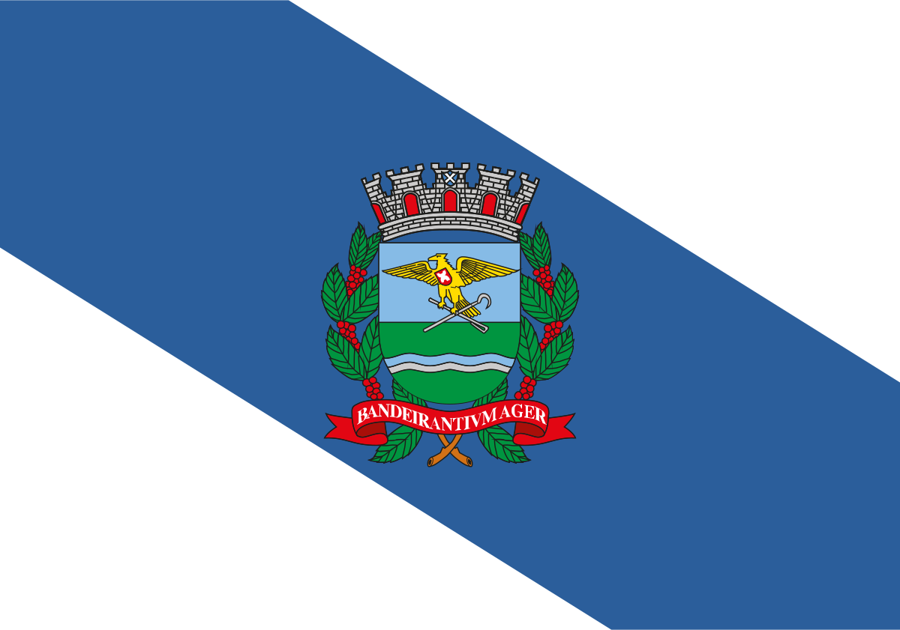

Voltar

A minha terra é um coração
Aberto ao sol pelas enxadas
Sangrando amor e tradição
No despertar das madrugadas
História exemplo, amor e fé
Assim traçamos teu perfil
Ribeirão Preto, terra do café
Orgulho de São Paulo e do Brasil
Nasceste do destino nacional
Das caminhadas rumo ao Oeste
E ainda guardas o belo ideal
Dessa epopéia em que nasceste.
A minha terra é um coração
Aberto ao sol pelas enxadas
Sangrando amor e tradição
No despertar das madrugadas
História exemplo, amor e fé
Assim traçamos teu perfil
Ribeirão Preto, terra do café
Orgulho de São Paulo e do Brasil
Ribeirão Preto esse destino
Que consagrou a tua gente
É do trabalho o grande hino
Que há de viver eternamente
És linda jóia no veludo
Dos nossos verdes infinitos cafezais
E se em ti amada terra temos tudo
Ainda procuramos dar-te mais.
A minha terra é um coração
Aberto ao sol pelas enxadas
Sangrando amor e tradição
No despertar das madrugadas
História exemplo, amor e fé
Assim traçamos teu perfil
Ribeirão Preto, terra do café
Orgulho de São Paulo e do Brasil